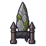
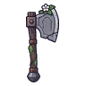
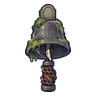
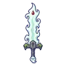
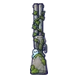
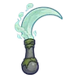
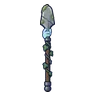
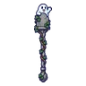
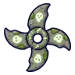
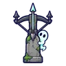

ป้ายหลุมศพผีสิง
มอนธาตุมืด Lv 20–32
เจอที่
| แมพ | โซน | Lv | ภูมิภาค |
|---|---|---|---|
| เนินสุสานโบสถ์ร้าง | แถวหลุมศพเก่า · สุสานคนนิรนาม | 22–30 | ป่ากองไฟ |
| หมู่บ้านคนขุดหลุม | หอเฝ้าหลุมศพ | 20–32 | ป่ากองไฟ |
| ทุ่งพวงหรีดแห้ง | ประตูหินพวงหรีดใหญ่ | 20–32 | ป่ากองไฟ |
| หุบซี่โครงยักษ์ | ใต้ซี่โครงยักษ์ | 20–32 | ป่ากองไฟ |
ค่าสถานะตามเลเวล
| Lv | HP | ATK | DEF | MDEF | EXP | Job |
|---|---|---|---|---|---|---|
| 20 | 2,656 | 43–64 | 13 | 3 | 32 | 24 |
| 26 | 2,946 | 46–70 | 17 | 4 | 40 | 30 |
| 32 | 4,361 | 60–89 | 20 | 5 | 47 | 35 |
ตีด้วยธาตุไหนดี
แรงขึ้น: ศักดิ์สิทธิ์ ×1.25
เบาลง: วิญญาณ ×0.75 พิษ ×0.5 มืด ×0 อมตะ ×0
วัตถุดิบที่ดรอป
| ของ | โอกาส | |
|---|---|---|
| เศษหินหลุมศพเรืองแสง | 55% | 1 ชิ้น (15% ได้ 2) |
อุปกรณ์ที่ดรอป (10)
| ของ | โอกาส |
|---|---|
 คาทาร์ป้ายหลุมศพ | 0.25% |
 ขวานป้ายหลุมศพ | 0.12% |
 กระดิ่งวิญญาณหลุมศพ | 0.12% |
 ดาบใหญ่ผีดูดเลือด | 0.12% |
 ลูกซองป้ายหลุมศพ | 0.12% |
 เคียวคู่ป้ายหลุมศพ | 0.12% |
 หอกป้ายหลุมศพ | 0.12% |
 คทาป้ายหลุมศพ | 0.12% |
 ดาวยักษ์หินหลุมศพ | 0.06% |
 หน้าไม้ป้ายหลุมศพ | 0.06% |
สกิล
ร่างแข็ง (Lv 25+) · ร่างแข็ง (Lv 60+) · ทุบพื้น (Lv 60+)